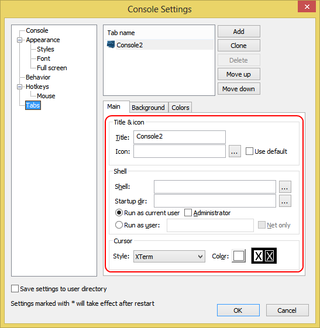
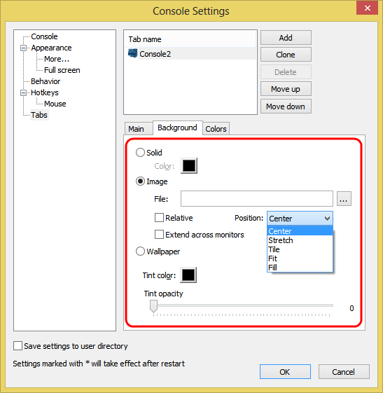

Add
Delete
Move up
Move down
These buttons allow you to create/delete a new tab definition and to move tab definitions up/down the list.
Title
Specifies tab title.
Icon
Specifies tab icon. If empty, the tab will use main window icon.
Shell
Specifies tab shell command line. If empty, the tab will use Console's default shell.
Startup dir
Specifies tab's shell initial directory. If empty, Console's default initial directory will be used.
Style
Select cursor style from the list.
Color
Click on the square to select cursor color.

Solid
Image
Wallpaper
Select background type.
Solid specifies a single color background.
Image specifies a bitmap background.
Wallpaper specifies that the desktop wallpaper will be used as
the background image.
Color
Select color for solid background type.
File
Specifies background image file for image background type.
Relative
If checked, background image will be relative, i.e. when moving the window, it will appear that it's move above the background image.
Position
Select image position from the list. Background image can be centered, stretched or tiled
Extend across monitors
If checked, background image will centered/stretched/tiled acroos multiple monitors (if present)
Tint color
Select tint color for image and wallpaper background types.
Tint opacity
Set tint opacity for image and wallpaper background types.